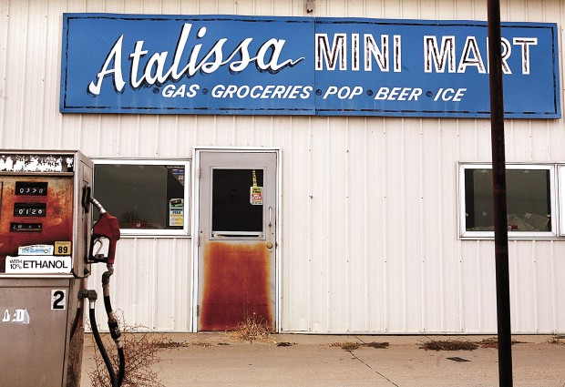
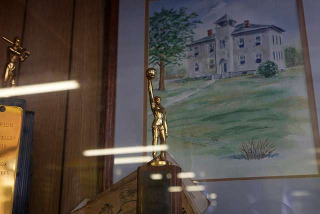

Atalissa, Iowa

The advance man for Henry's Turkey Service could not believe his fortune. Sent to Iowa in 1974 to find a building suitable for a men's dormitory, he had spotted an old schoolhouse rising from a hill, just six miles from the turkey plant.
The town agreed to a few hundred dollars a month in rent. In came appliances and dozens of beds; out went portraits of the class of '17 and other relics from another time. These items recall an earlier Atalissa, when a farm community named after an Indian princess grew into a local hub, with a bank, a hotel, a railroad depot - and a two-story school, built in 1911, whose bell summoned generations of children uphill for lessons.
Now the schoolhouse was a bunkhouse for a growing number of Texas men with developmental disabilities, and jobs.
At 3 o'clock every weekday morning, they were roused, fed and driven through the black-and-blue night to the huge Louis Rich processing plant, looming over West Liberty from its 10 feather-flecked acres. Along with their nondisabled colleagues, they put on protective gear, including lab coats and rubber boots, before entering a workplace of clamor and gore.
Stacks of turkey coops were trucked into the "live dock," where the men grabbed toms weighing about 40 pounds - more if it had rained - and hung them by their feet on an overhead conveyor's metal shackles. A typical day meant 20,000 turkeys.
The frightened birds often beat back with powerful wings. But Willie Levi possessed a rare gift for calming them down. He'd talk turkey, he says. "And they'd talk right back to me."
Some of the Atalissa men worked as "pinners," pulling off stray feathers, while others, working as "rehangers," shackled the carcasses to a second conveyor that led to evisceration. Billy Penner did this work for decades, and hated it: "Too bloody."
Down the line the turkey swung, a hole sliced well below its breast, its viscera - heart, intestines, liver, gizzard and spleen - pulled down for scrutiny by a federal inspector. Then, after its heart, valve stem and lungs were snipped or sucked away, the bird went to the "croppers," who pulled out its feed-filled digestive system.
A company document explains this least-desired job:
1: Reach under neck skins and grab the windpipe and the top of the crop. 2: Pull down until both the windpipe and the crop come out of the bird cavity. 3: Place the windpipe and crop in the trough of running water - known as "the river" - to go to offal.
"Two fingers," recalls Henry Wilkins, one of the Atalissa men. "Take this finger up there, pull the skin apart, take both your fingers up there, pull it straight down, and the crop's out. Throw it in the trough."
The men were occasionally ridiculed, and even pelted with turkey slime; more often, though, they were admired for their work ethic. Dave Meincke, the plant's evisceration supervisor, has never forgotten "how they took me under their wing" when he joined the assembly line more than 30 years ago, or the pride they had in letting no shackle pass empty.
"They came in, and they got it done," he says.
But the men did not earn the same as their nondisabled colleagues.
Henry's Turkey Service, which was paid directly by the plant for the men's labor, was capitalizing on a section of the Fair Labor Standards Act of 1938 that allows certified employers to pay a subminimum wage to workers with a disability, based on their productivity when compared with that of nondisabled workers.
The company also deducted hundreds of dollars from the men's earnings and Social Security benefits for room and board - and "in-kind" services, like bowling, dining out and annual visits to an amusement park. The rest was deposited in individual bank accounts in Goldthwaite that the company dipped into to pay for incidentals and medical costs, since the men had no health insurance or Medicaid in Iowa.
In the end, they received about $65 a month. Mr. Johnson, who all but moved into the bunkhouse, might also slip a man $50 for his birthday, or tell him to keep the change after running an errand to the Atalissa Mini Mart.
But Henry's Turkey Service raised suspicions from the start, prompting a review by an Iowa social worker named Ed George. In a pointed memorandum to his supervisor in December 1974, he described an exploitative operation devoid of basic freedoms. He called the business model "obscene."
Mr. George's prescient memo of outrage changed nothing. The days bled into years. Hang. Rehang. Pull guts.